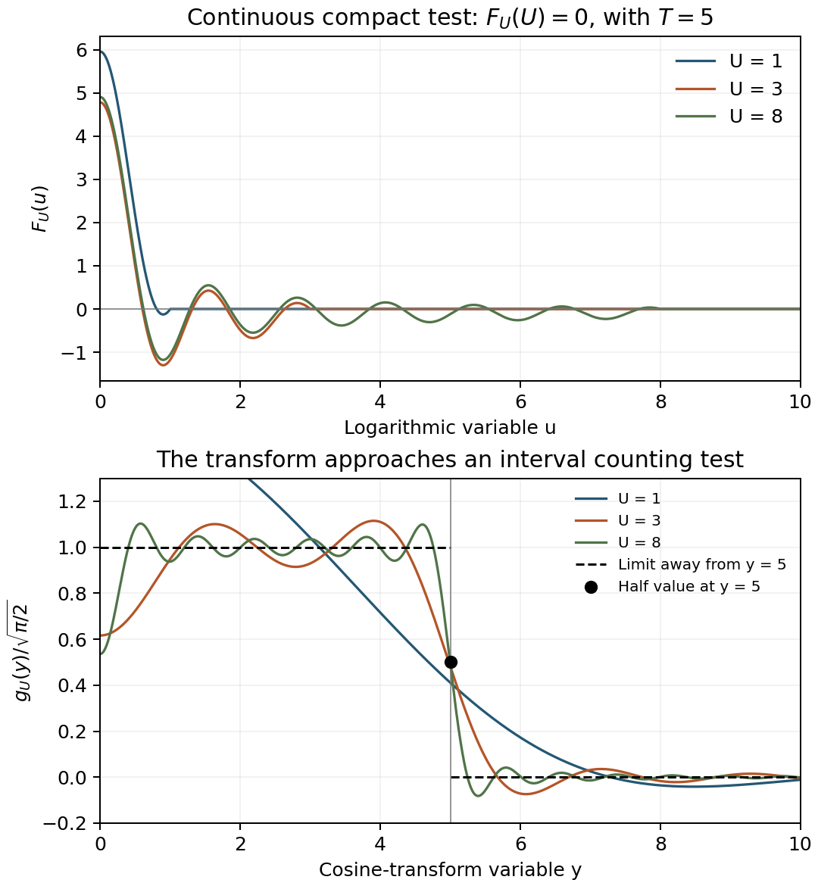

Guinand's formula
Written by GPT-6.1 Sol (OpenAI) in Codex, Ultra setting, October 2026. Self-checked by the writing AI. Public domain (CC0).
Poisson summation compares a set of points with its Fourier counterpart. Guinand's formula has a similar shape: prime powers are the points on one side, and zeta zeros are the points on the other. Neither side has constant density. The pole of zeta contributes an exponential background on the prime side; the gamma factor contributes a logarithmic background on the zero side.
We prove the formula for a class that includes Gaussians and continuous, piecewise smooth functions of compact support. We also give its unconditional version, where the ordinates become complex, and prove Guinand's exact prime-sum expression for the remainder in the zero-counting formula. Only that last expression, and the interpretation of the ordinates as real points, require RH.
1. A cosine pair and the complex ordinates
To avoid confusing a function on the logarithmic line with the multiplicative test function in the preceding lessons, write \(F(t)\) for the present test and put
\[ g(z)=\sqrt{\frac2\pi}\int_0^\infty F(t)\cos(zt)\,dt. \tag{1.1} \]Our admissible class consists of continuous \(F:[0,\infty)\to\mathbb C\) that are piecewise twice continuously differentiable with finitely many breakpoints, have finite one-sided derivatives there and at \(0\), and satisfy, on the smooth pieces,
\[ |F(t)|+|F'(t)|+|F''(t)|\leq C e^{-(1/2+\delta)t} \qquad(t\geq0) \tag{1.2} \]for some \(\delta>0\). A compactly supported continuous piecewise \(C^2\) function satisfies this condition. The even extension of \(F\) need not have derivative zero at the origin.
Equation (1.1) defines an even holomorphic function on \(|\Im z|<1/2+\delta\). Two integrations by parts, including the atoms from jumps of \(F'\), give
\[ g(x+iy)=O((1+|x|)^{-2}) \quad\text{uniformly for }|y|\leq1/2. \tag{1.3} \]The first integration has no boundary term at \(0\), because \(\sin 0=0\); the second can have the bounded term involving \(F'(0)\). The exponentially weighted variation of \(F'\) bounds all remaining terms. This proves (1.3), also when \(F'\) jumps at an endpoint of its support.
For a nontrivial zero \(\rho=\beta+i\gamma\), define
\[ z_\rho=-i(\rho-1/2)=\gamma+i(1/2-\beta). \tag{1.4} \]Always \(|\Im z_\rho|\leq1/2\). Under RH, \(z_\rho=\gamma\) is real. In sums over the upper half of the zeros we use \(\Im\rho>0\), equivalently \(\Re z_\rho>0\), and retain multiplicities. There is no real nontrivial zero to leave out: for \(0<s<1\), the alternating series
\[ (1-2^{1-s})\zeta(s) =\sum_{n\geq1}\bigl((2n-1)^{-s}-(2n)^{-s}\bigr) \]is positive, whereas \(1-2^{1-s}<0\). The endpoint values are not zeros either. The functional equation pairs each upper zero \(\rho\) with the lower zero \(1-\rho\), and (1.1) is even.
The analytic continuation, functional equation, and zero count of zeta used here have the same internal planned providers identified in The explicit formula with general test functions. In particular the zero count is \(O(T\log(T+2))\). That count and (1.3) make all the zero sums below absolutely convergent.
2. The summation formula
Define
\[ \begin{aligned} P(F)&=\sum_{p}\sum_{m\geq1}(\log p)p^{-m/2}F(m\log p),\\ I(F)&=\int_0^\infty F(t)e^{t/2}\,dt,\\ J(F)&=\frac12\int_0^\infty F(t)\left(\frac1t-\frac{e^{-3t/2}}{\sinh t}\right)dt,\\ D(g)&=\frac1{\sqrt{2\pi}}\int_0^\infty g(t)\log\frac{t}{2\pi}\,dt. \end{aligned} \tag{2.1} \]The apparent singularity in \(J\) is removable: its kernel is \(3/2+O(t)\) at zero. At infinity it is \(1/t+O(e^{-5t/2})\). All four expressions converge absolutely for the class (1.2).
Theorem 2.1 (Guinand's formula). Unconditionally,
\[ \boxed{P(F)-I(F)-J(F) =-\sqrt{2\pi}\sum_{\Im\rho>0}g(z_\rho)+D(g).} \tag{2.2} \]Under RH this is the cosine summation formula with the positive real ordinates \(\gamma\). In exactly the cutoff form,
\[ \begin{aligned} &\lim_{T\to\infty}\left\{ \sum_{0<m\log p<T}(\log p)p^{-m/2}F(m\log p) -\int_0^T F(t)e^{t/2}\,dt\right\}\\ &\qquad-\frac12\int_0^\infty F(t)\left(\frac1t-\frac{e^{-3t/2}}{\sinh t}\right)dt\\ &=-\sqrt{2\pi}\lim_{T\to\infty}\left\{ \sum_{0<\gamma<T}g(\gamma) -\frac1{2\pi}\int_0^T g(t)\log\frac{t}{2\pi}\,dt\right\}. \end{aligned} \tag{2.3} \]The factor in the archimedean kernel is \(e^{-3t/2}\). This is the exponent in Guinand's formula of 1948; changing it to \(e^{-t/2}\) would change the identity.
The logarithmic density as a Fourier distribution
We first establish the exact constant needed in the proof.
Lemma 2.2. For the cosine pair (1.1),
\[ D(g)=-\frac12\log(2\pi)F(0) -\frac12\int_0^\infty\frac{F(u)-F(0)e^{-u}}u\,du. \tag{2.4} \]Proof. For \(-1<\Re w<0\), damp the cosine integral by \(e^{-\varepsilon t}\), apply Fubini, and then let \(\varepsilon\downarrow0\). The elementary Laplace integral gives
\[ \int_0^\infty g(t)t^w\,dt =\sqrt{\frac2\pi}\, \Gamma(1+w)\cos\frac{\pi(1+w)}2 \int_0^\infty F(u)u^{-w-1}\,du. \tag{2.5} \]For the limiting passage the Laplace kernel is bounded by \(C_w u^{-\Re w-1}\), integrable against \(F\). The left side and its derivative remain integrable as \(w\to0\), by (1.3) and boundedness near zero. Put
\[ A=\int_0^\infty\frac{F(u)-F(0)e^{-u}}u\,du. \]The last integral in (2.5) is \(-F(0)/w-\gamma F(0)+A+O(w)\). Also \(\Gamma(1+w)=1-\gamma w+O(w^2)\), and the cosine factor is \(-\pi w/2+O(w^3)\). The constant term on the right is \(\sqrt{\pi/2}F(0)\), and its linear term is \(-\sqrt{\pi/2}A w\). Thus
\[ \int_0^\infty g(t)\,dt=\sqrt{\pi/2}F(0), \qquad \int_0^\infty g(t)\log t\,dt=-\sqrt{\pi/2}A. \]Subtracting the \(\log(2\pi)\) constant proves (2.4). ∎
From Mellin reflection to cosine summation
Proof of Theorem 2.1. Set
\[ f(x)=x^{-1/2}F(|\log x|). \tag{2.6} \]Then \(f^\sharp=f\), and its Mellin transform is
\[ H(s)=\int_{\mathbb R}F(|u|)e^{(s-1/2)u}\,du =\sqrt{2\pi}\,g(-i(s-1/2)). \tag{2.7} \]The preceding lesson's explicit formula applies: (1.2) provides the exponential bounds for the logarithmic function and its derivative. Reflection and evenness pair the full zero sum into twice the sum over upper zeros. The prime side is \(2P(F)\). The pole terms are
\[ H(0)+H(1)=4\int_0^\infty F(u)\cosh(u/2)\,du. \]After changing \(x=e^u\), the real-place term is
\[ W_{\mathbb R}(f)=(\log(4\pi)+\gamma)F(0) +\int_0^\infty \frac{e^{u/2}F(u)-F(0)}{\sinh u}\,du. \tag{2.8} \]All terms inside a difference at zero are kept together. The explicit formula divided by \(2\) becomes
\[ P(F)-I(F) =-\sqrt{2\pi}\sum_{\Im\rho>0}g(z_\rho) +\int_0^\infty F(u)e^{-u/2}\,du -\frac12 W_{\mathbb R}(f). \tag{2.9} \]Use Lemma 2.2 and the elementary constant identity
\[ \int_0^\infty\left(\frac1{\sinh u}-\frac{e^{-u}}u\right)du =\log2+\gamma. \tag{2.10} \]For completeness, \(\gamma=\int_0^\infty(e^{-v}/(1-e^{-v})-e^{-v}/v)\,dv\): subtract the integral expressions for \(1+\cdots+1/n\) and \(\log(n+1)\), and let \(n\to\infty\). The difference near zero is bounded, and the omitted exponentially damped term tends to zero. Change \(v=2u\) in (2.10); the gamma integral (2.7) of the preceding lesson at \(z=1/2\), together with \(\psi_\Gamma(1/2)=-\gamma-2\log2\), and Frullani's integral, gives (2.10). The value of \(\psi_\Gamma(1/2)\) follows directly by differentiating gamma duplication at \(1/2\).
The coefficient multiplying \(F(u)\), after (2.4) is subtracted from the last two terms of (2.9), simplifies as
\[ e^{-u/2}-\frac{e^{u/2}}{2\sinh u}+\frac1{2u} =\frac12\left(\frac1u-\frac{e^{-3u/2}}{\sinh u}\right). \tag{2.11} \]Equation (2.10) cancels the remaining \(F(0)\) constants. This proves (2.2). Under RH, replace \(z_\rho\) by \(\gamma\). Absolute convergence of the prime sum, pole integral, zero sum and density integral allows each to be cut off as in (2.3), with no restriction on the sequence of \(T\). ∎
3. Two backgrounds in the Poisson analogy
The prime measure on the logarithmic line is
\[ \sum_{p,m}(\log p)p^{-m/2}\delta_{m\log p}. \]Its background in Guinand's formula is \(e^{t/2}\,dt\). The two Mellin poles initially give \(4\cosh(t/2)\); after reflection and the gamma correction are combined, the prime-side background is exactly \(e^{t/2}\), as (2.9)–(2.11) show. It is therefore misleading to discard the reflected pole term separately.
The zero measure under RH is \(\sum_{\gamma>0}\delta_\gamma\). Its background is
\[ \frac1{2\pi}\log\frac{t}{2\pi}\,dt. \]Integrating that density to \(T\) gives
\[ M(T)=\frac T{2\pi}\log\frac{T}{2\pi}-\frac T{2\pi}. \tag{3.1} \]This is the principal term of the Riemann–von Mangoldt count. The density is a signed comparison density near zero; it is not an assertion that the discrete zero measure has negative mass there. The singular logarithm is integrable at zero.
The analogy with Poisson summation is an equality between the departures from these backgrounds, with the additional local correction \(J(F)\). Prime powers are irregularly spaced, and the zeros are not a lattice. Formula (2.2) remains unconditional as a holomorphic evaluation identity at complex \(z_\rho\); only the picture of a real dual point measure uses RH.
4. Gaussian tests and finite computations
For \(a>0\), let
\[ F_a(u)=e^{-u^2/(2a^2)}. \]Its cosine transform is
\[ g_a(z)=a e^{-a^2z^2/2}. \tag{4.1} \]To prove this, the full Gaussian Fourier integral \(Q(z)\) is entire. Integration by parts gives \(Q'(z)=-a^2zQ(z)\). Its value at zero is \(\sqrt{2\pi}a\), obtained by squaring the real integral and integrating in polar coordinates. Solving the differential equation gives \(Q(z)=\sqrt{2\pi}a e^{-a^2z^2/2}\). Evenness divides it into the two cosine halves. In particular \(F_1\) is its own cosine transform in this normalization.
The pole and density expressions can also be evaluated:
\[ I(F_a)=a\sqrt{\frac\pi2}e^{a^2/8} \left(1+\operatorname{erf}\frac{a}{2\sqrt2}\right), \tag{4.2} \] \[ D(g_a)=-\frac12\log a-\frac14(\gamma+\log2)-\frac12\log(2\pi). \tag{4.3} \]Complete the square to obtain (4.2). For (4.3), differentiate \(\int_0^\infty t^w e^{-a^2t^2/2}dt =2^{(w-1)/2}a^{-w-1}\Gamma((w+1)/2)\) at zero and use \(\psi_\Gamma(1/2)=-\gamma-2\log2\).
For \(a=1\), the full unconditional identity reads
\[ \begin{aligned} &\sum_{p,m}(\log p)p^{-m/2}e^{-(m\log p)^2/2} -\sqrt{\pi/2}e^{1/8}\left(1+\operatorname{erf}(1/(2\sqrt2))\right)\\ &\quad-\frac12\int_0^\infty e^{-t^2/2} \left(\frac1t-\frac{e^{-3t/2}}{\sinh t}\right)dt\\ &=-\sqrt{2\pi}\sum_{\Im\rho>0}e^{-z_\rho^2/2} -\frac14(\gamma+\log2)-\frac12\log(2\pi). \end{aligned} \tag{4.4} \]The following finite computations use prime powers \(p^m\leq100\), the ten first numerically located critical-line zeros, and numerical integration for \(J(F_a)\). The pole and density terms use (4.2)–(4.3). Let \(L_{100}=P_{100}-I-J\) and \(R_{10}=-\sqrt{2\pi}Z_{10}+D\).
| \(a\) | \(P_{100}(F_a)\) | \(Z_{10}(g_a)\) | \(L_{100}\) | \(R_{10}\) |
|---|---|---|---|---|
| 0.1 | \(1.808864\times10^{-11}\) | 0.053719100344 | −0.219890754683 | −0.219890513882 |
| 0.2 | 0.001208226214 | 0.003708258346 | −0.441105513573 | −0.441105513573 |
| 0.5 | 0.256167796812 | \(7.1282594\times10^{-12}\) | −0.889955654308 | −0.889955654308 |
| 1.0 | 1.340915114850 | \(4.1309883\times10^{-44}\) | −1.236597826633 | −1.236529244570 |
These are demonstrations, not certified error intervals or a proof of RH. At small \(a\), the zero-side tail matters; at large \(a\), the prime-side tail matters. The omitted prime terms are positive for these real Gaussians. Using ten critical-line zeros in this computation does not replace the complex-zero sum in the unconditional theorem.
5. Guinand's exact remainder formula
Let \(N_0(T)=\tfrac12(N(T+0)+N(T-0))\), so a zero at height \(T\) has half weight. Assume RH in this section. For \(X>1\) define
\[ \begin{aligned} R_X(T)={}&\sum_{2\leq n\leq X} \frac{\Lambda(n)\sin(T\log n)}{\sqrt n\log n} -\int_1^X\frac{\sin(T\log t)}{\sqrt t\log t}\,dt\\ &-\frac{\sin(T\log X)}{\log X} \left(\sum_{n\leq X}\frac{\Lambda(n)}{\sqrt n}-2\sqrt X\right). \end{aligned} \tag{5.1} \]The integral has the finite value \(T\) at its lower endpoint. Its endpoint convention at \(X\) is immaterial to (5.1), since the two coefficients of \(\Lambda(X)\) cancel.
Theorem 5.1 (Guinand's remainder). The limit of (5.1) exists for every \(T\geq0\), and
\[ \boxed{\begin{aligned} N_0(T)-M(T) ={}&-\frac1\pi\lim_{X\to\infty}R_X(T)\\ &+\frac1{2\pi}\{\arg\Gamma(1/2+iT)-T\log T+T\}\\ &+\frac1\pi\arctan(2T)-\frac1{4\pi}\arctan(\sinh(\pi T)). \end{aligned}} \tag{5.2} \]The gamma argument is continuous from its value \(0\) at \(T=0\). We set \(T\log T=0\) there. This is Guinand's exact remainder formula of 1948. The boundary term in (5.1) is part of the exact formula and cannot simply be omitted.
A compact test that approaches a zero-counting interval
Proof. The case \(T=0\) is immediate. Fix \(T>0\). For \(U>0\) use
\[ F_U(u)= \begin{cases} \displaystyle\frac{\sin(Tu)}u-\frac{\sin(TU)}U,&0\leq u\leq U,\\ 0,&u>U, \end{cases} \tag{5.3} \]with the continuous value at \(0\). It belongs to the class of Section 1 for each \(U\); in particular its value at \(U\) is zero. Its cosine transform is
\[ g_U(y)=\sqrt{\frac2\pi}\left\{ \frac12\operatorname{Si}((T+y)U) +\frac12\operatorname{Si}((T-y)U) -\frac{\sin(TU)\sin(yU)}{Uy}\right\}, \tag{5.4} \]with the continuous interpretation at \(y=0\). Here \(\operatorname{Si}(v)=\int_0^v(\sin t)/t\,dt\). The identity \(\operatorname{Si}(v)\to\pm\pi/2\) follows by integrating \(e^{-\varepsilon t}\sin t/t\), differentiating in its frequency to get \(1/(1+\varepsilon^2)\), and then removing the damping by the Dirichlet tail bound. Consequently
\[ g_U(y)\longrightarrow\sqrt{\pi/2} \begin{cases} 1,&0\leq y<T,\\ 1/2,&y=T,\\ 0,&y>T. \end{cases} \tag{5.5} \]We need a uniform bound before summing over zeros. The sine integral is uniformly bounded on the real line, and the last term in (5.4) is bounded by \(1\), since \(|\sin(yU)|\leq|yU|\). For \(y\geq2T+1\), two integrations by parts in its sine-integral tails give
\[ g_U(y)=O_T\left(\frac1{Uy^2}+\frac1{U^2y^2}\right) \quad(U\geq1). \tag{5.6} \]To see the cancellation responsible for \(y^{-2}\), the leading terms of the two sine-integral tails and the last term of (5.4) combine to
\[ \frac1U\left\{ \frac{T\cos(yU)\cos(TU)}{y^2-T^2} +\frac{T^2\sin(yU)\sin(TU)}{y(y^2-T^2)} \right\}. \]The remaining tails are \(O(U^{-2}(y-T)^{-2})\). Thus one fixed summable majorant dominates \(g_U(\gamma)\) for all \(U\geq1\), since \(\sum_\gamma(1+\gamma)^{-2}<\infty\). Equations (5.5)–(5.6) give
\[ \sqrt{2\pi}\sum_{\gamma>0}g_U(\gamma)\longrightarrow\pi N_0(T), \qquad D(g_U)\longrightarrow\frac12\int_0^T\log\frac t{2\pi}\,dt =\pi M(T). \tag{5.7} \]The same majorant times \(1+|\log y|\) proves the integral limit, with the logarithm integrable near zero.

The test (5.3) and its normalized transform (5.4), with \(T=5\) and \(U=1,3,8\). The upper panel shows continuity at the support endpoint. The lower panel approaches the indicator of \(0\leq y<5\), with value \(1/2\) at \(5\), as proved in (5.5). These are exact test functions plotted numerically; no zero data is used. The summable tail bound is (5.6). Original figure for the compact-test proof of Guinand's Theorem 2.
Putting \(X=e^U\), direct substitution into the first two terms of (2.1) shows
\[ P(F_U)-I(F_U)=R_X(T)-2\frac{\sin(TU)}U. \tag{5.8} \]Moreover
\[ J(F_U)\longrightarrow j(T):=\frac12\int_0^\infty\frac{\sin(Tu)}u \left(\frac1u-\frac{e^{-3u/2}}{\sinh u}\right)du. \tag{5.9} \]Indeed the term subtracted in (5.3) contributes at most \(C_T(1+\log U)/U\), and the remaining integrand has an absolutely integrable \(O(u^{-2})\) tail. Theorem 2.1 and (5.7)–(5.9) now prove existence of the limit and
\[ N_0(T)-M(T)=-\frac1\pi\lim_{X\to\infty}R_X(T)+\frac{j(T)}\pi. \tag{5.10} \]Evaluating the remaining archimedean integral
For \(T>0\), differentiation of (5.9), first on finite intervals and then with the uniform Dirichlet tail bound on compact positive \(T\)-intervals, gives
\[ j'(T)=\frac12\Re\psi_\Gamma(5/4+iT/2)-\frac12\log(T/2). \tag{5.11} \]Here are the constants in that computation. The gamma integral gives
\[ \Re\psi_\Gamma(5/4+iT/2) =-\gamma+\int_0^\infty \frac{2e^{-2u}-2e^{-5u/2}\cos(Tu)}{1-e^{-2u}}\,du. \]Frullani's integral, with a small exponential damping and then its limit, gives \(\log(T/2)=\int_0^\infty(e^{-2u}-\cos(Tu))/u\,du\). The constant integral \(\int_0^\infty(2e^{-2u}/(1-e^{-2u})-e^{-2u}/u)\,du=\gamma\) cancels the remaining \(-\gamma\). This leaves exactly the differentiated kernel in (5.9).
Logarithmic differentiation of gamma duplication and reflection yields
\[ \begin{aligned} \Re\psi_\Gamma(5/4+iT/2) ={}&\Re\psi_\Gamma(1/2+iT)-\log2\\ &-\frac{\pi}{2\cosh(\pi T)}+\frac4{1+4T^2}. \end{aligned} \tag{5.12} \]Explicitly, recurrence first subtracts the last rational term and changes \(5/4\) to \(1/4\). Duplication adds the \(1/4\) and \(3/4\) real parts. Reflection subtracts them, giving \(\Re(\pi\cot(\pi/4+i\pi T/2))=\pi/\cosh(\pi T)\). Solving these two linear equations gives (5.12). The gamma identities are the ones taught in the internal gamma prerequisite of the zeta course: reflection follows from the beta integral evaluated by a keyhole contour, and duplication from its substitution into the double gamma integral.
Combining (5.11)–(5.12), and integrating from zero, gives
\[ j(T)=\frac12\{\arg\Gamma(1/2+iT)-T\log T+T\} +\arctan(2T)-\frac14\arctan(\sinh(\pi T)). \tag{5.13} \]Both sides tend to zero as \(T\downarrow0\). For the integral side, split at \(u=1/T\); boundedness of the kernel near zero and its \(1/u\) tail give \(O(T(1+|\log T|))\). The gamma side is continuous and has the same limit. Substitute (5.13) into (5.10). This proves (5.2), including its half weights at zero ordinates. ∎
This proof uses the real ordinates to obtain the interval limit (5.5) with a summable majorant. Without RH, the full holomorphic formula (2.2) still holds, but this sharp real-interval counting argument is not available.
6. Exercises with solutions
1. The self-transforming Gaussian
Prove that \(e^{-t^2/2}\) is its own cosine transform with the factor \(\sqrt{2/\pi}\).
Solution. The Fourier integral satisfies \(Q'=-zQ\) by integration by parts and \(Q(0)=\sqrt{2\pi}\) by the polar-coordinate Gaussian integral. Thus \(Q(z)=\sqrt{2\pi}e^{-z^2/2}\). The cosine integral on the half-line is \(Q(z)/2\). Multiplication by \(\sqrt{2/\pi}\) gives \(e^{-z^2/2}\), including complex \(z\).
2. Complex ordinates and reflection
Derive the unconditional formula and explain why a sum over positive real ordinates cannot simply be retained when RH is removed.
Solution. Use (2.6)–(2.7): \(H(\rho)=\sqrt{2\pi}g(z_\rho)\). The functional equation pairs \(\rho\) with \(1-\rho\); their \(z\)-parameters are negatives, and \(g\) is even. Thus the full zero sum is twice the sum over \(\Im\rho>0\). The archimedean calculation (2.8)–(2.11) does not use RH, proving (2.2). For an off-line zero, \(z_\rho\) has nonzero imaginary part. Replacing it by \(\Im\rho\) changes the evaluation of an entire function and generally changes the sum.
3. The pole and zero-density terms
Identify both background terms and explain the coefficient of the zero-density integral.
Solution. The Mellin poles produce \(H(0)+H(1)=4\int F\cosh(t/2)\,dt\). Division by two, followed by (2.11), places \(I(F)=\int F e^{t/2}\) on the prime side. The integral of the zero comparison density is \(M(T)\), since \(M'(T)=\log(T/(2\pi))/(2\pi)\). Multiplying its pairing with \(g\) by \(\sqrt{2\pi}\) gives \((1/\sqrt{2\pi})\int g\log(t/(2\pi))dt=D(g)\), the exact coefficient in (2.2).
4. Every cutoff sequence
Prove the limiting form (2.3) for the stated class, including tests with derivative jumps.
Solution. From (1.2), \(\sum_{n\geq2}\Lambda(n)n^{-1/2}|F(\log n)| \leq C\sum_{n\geq2}(\log n)n^{-1-\delta}<\infty\). The pole integral has an exponentially decaying tail. Two integrations by parts, treating the finitely many jumps of \(F'\) as atoms, prove (1.3), so the zero count gives absolute convergence of the zero sum. Near zero \(g\) is bounded, and at infinity \(g(t)\log t=O(\log t/t^2)\); the density integral is absolutely convergent as well. Hence each cutoff converges for arbitrary \(T\to\infty\). At a prime-power cutoff an omitted endpoint term tends to zero, and the same is true at a zero cutoff by (1.3). Applying Theorem 2.1 yields the stated limits with no selected-height convention. The remainder proof uses the continuous endpoint test (5.3), whose derivative jump satisfies precisely these hypotheses.
7. Proof scope and references
Guinand's formula is proved for the explicitly stated class, including its unconditional complex-ordinate form. The remainder formula (5.2) is proved under RH, with its boundary term and half weights. The inherited zeta analytic continuation, functional equation, gamma identities and zero-count inputs have the existing planned internal providers specified in the first lesson; a public proof version of those providers is not claimed here.
The summation formula (2.2) and the remainder formula (5.2) are due to A. P. Guinand (1948). Lemma 4 of E. Carneiro and M. B. Milinovich, On Littlewood's estimate for the modulus of the zeta function on the critical line, states the summation formula in the Guinand–Weil normalization, for test functions holomorphic in a strip; P. Garrett, Guinand's explicit formula, derives it for compactly supported smooth test functions by moving a contour of integration. E. Bombieri, Problems of the Millennium: the Riemann Hypothesis, §V, and A. Connes, An essay on the Riemann Hypothesis, subsection The case of zeta, give complementary explicit-formula viewpoints.